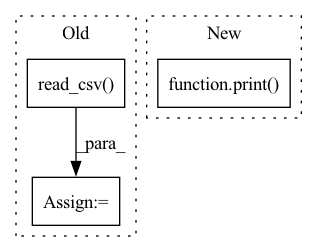

Pattern ID :21823
Before Change
df_que_test = data_dict["df_que_test"]
que_win_test = pd.read_csv( os.path.join(
save_dir, "qid_test_window_predictions.txt"), sep="\t")
que_win_test = update_question_df(que_win_test)
// df_que_win_test = data_dict["df_que_win_test"]
// 映射学生
orirow_2_uid = {}
for _, row in df_que_test.iterrows():
orirow_2_uid[int(row["orirow"].split(",")[0])] = row["uid"]
// map
que_test["uid"] = que_test["orirow"].map(orirow_2_uid)
que_test["inter_num"] = que_test["uid"].map(stu_inter_num_dict)
que_win_test["uid"] = que_win_test["orirow"].map(orirow_2_uid)
que_win_test["inter_num"] = que_win_test["uid"].map(stu_inter_num_dict)
// print("Start 基于题目的长短序列")
// que_update_ls_report(que_test, que_win_test, report,save_dir=save_dir) // short long 结果After Change
save_df(que_win_test,"que_win_test",save_dir)
try:
print( "Start 基于题目的长短序列")
que_update_ls_report(que_test, que_win_test, report,save_dir=save_dir) // short long 结果
except:
print("Fail 基于题目的长短序列")
In pattern: SUPERPATTERN
Frequency: 3
Non-data size: 3
Instances Fragment ID: 69453479
Project Name: pykt-team/pykt-toolkit
Commit Name: 1e954fe5312232f984f38b09a23fbd99ddb5f4ae
Time: 2022-10-12
Author: 2808581543@qq.com
File Name: examples/extract_quelevel_raw_result.py
M Class Name: AnonimousClass
N Class Name: AnonimousClass
M Method Name: add_question_report(6)
N Method Name: add_question_report(6)
M Parent Class:
N Parent Class:
M File Name: examples/extract_quelevel_raw_result.py
N File Name: examples/extract_quelevel_raw_result.py
M Start Line: 247
M End Line: 269
N Start Line: 153
N End Line: 169
Before Change
Implements the logic of this task.
gt_buildings_csv = os.path.join(self.config.root_directory,
"SummaryData/SN6_Train_AOI_11_Rotterdam_Buildings.csv")
gt_buildings = pd.read_csv( gt_buildings_csv)
os.makedirs(self.config.segmentation_directory, exist_ok=True)
// Walk the directory and save the filenames in it
sar_image_paths = glob.glob(os.path.join(self.config.root_directory, "SAR-Intensity", "*.tif"))
// Run processingAfter Change
gt_buildings_csv=gt_buildings_csv_filepath),
sar_image_paths)):
pass
print( "Created segmentation masks")
orientations = pd.read_csv(filepath_or_buffer=self.config.orientations_input, sep=" ", index_col=0,
names=["strip", "direction"], header=None)
df_fold = pd.DataFrame(columns=["ImageId", "sar", "segm", "rotation", "x", "y", "fold"])
l_edge = 591640 Fragment ID: 69453480
Project Name: biasvariancelabs/aitlas
Commit Name: f0fec08d1189a9954b03e319e1150189276d4527
Time: 2021-03-16
Author: popovstefan@live.com
File Name: aitlas/tasks/spacenet6_preprocess.py
M Class Name: SpaceNet6PreprocessTask
N Class Name: SpaceNet6PreprocessTask
M Method Name: run(1)
N Method Name: run(1)
M Parent Class: BaseTask
N Parent Class: BaseTask
M File Name: aitlas/tasks/spacenet6_preprocess.py
N File Name: aitlas/tasks/spacenet6_preprocess.py
M Start Line: 103
M End Line: 150
N Start Line: 121
N End Line: 177
Before Change
print(orders)
orders.to_csv(self.EXAMPLE_FILE)
orders = pd.read_csv( self.EXAMPLE_FILE, index_col=["datetime", "instrument"])
// 3) run the strategy
strategy_config = {
"class": "FileOrderStrategy",After Change
factor = df["$factor"].item()
price_unit = price / factor * 100
dealt_num_for_1000 = (account_money // price_unit) * (100 / factor)
print( price, factor, price_unit, dealt_num_for_1000)
// 2) generate orders
orders = self._gen_orders(dealt_num_for_1000)
orders.to_csv(self.EXAMPLE_FILE) Fragment ID: 69453485
Project Name: microsoft/qlib
Commit Name: 89972f6c6f9fa629b4f74093d4ba1e93c9f7a5e5
Time: 2022-06-09
Author: huo53926@126.com
File Name: tests/backtest/test_file_strategy.py
M Class Name: FileStrTest
N Class Name: FileStrTest
M Method Name: test_file_str(1)
N Method Name: test_file_str(1)
M Parent Class: TestAutoData
N Parent Class: TestAutoData
M File Name: tests/backtest/test_file_strategy.py
N File Name: tests/backtest/test_file_strategy.py
M Start Line: 59
M End Line: 61
N Start Line: 51
N End Line: 59